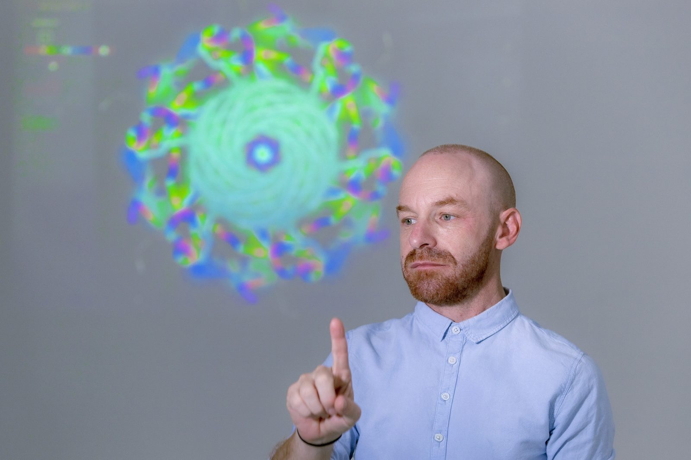
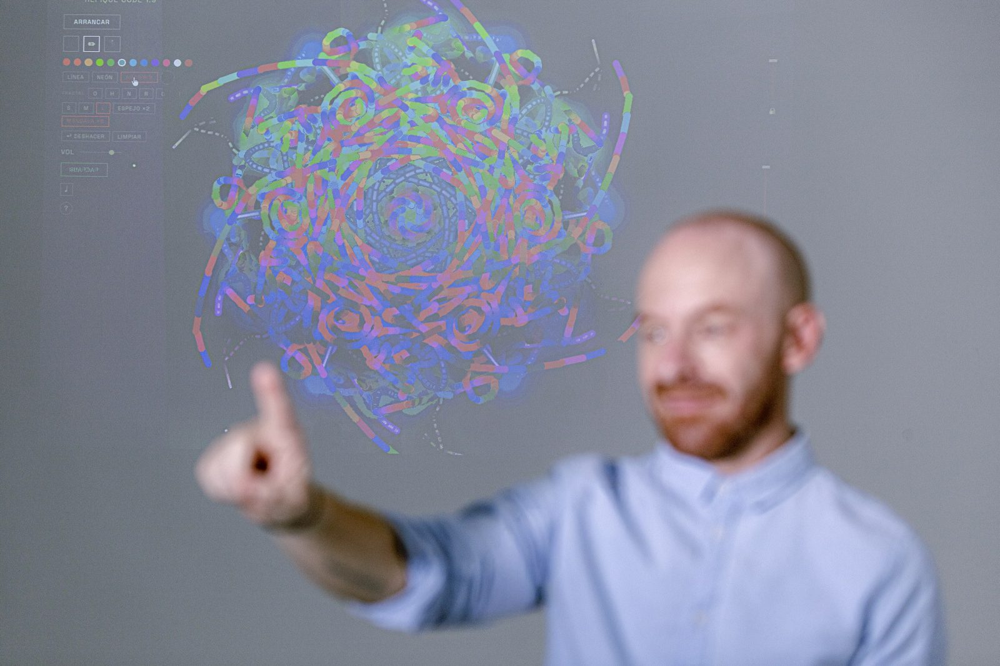
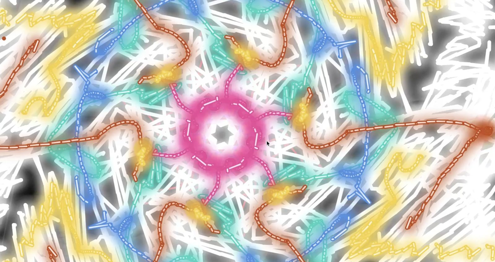
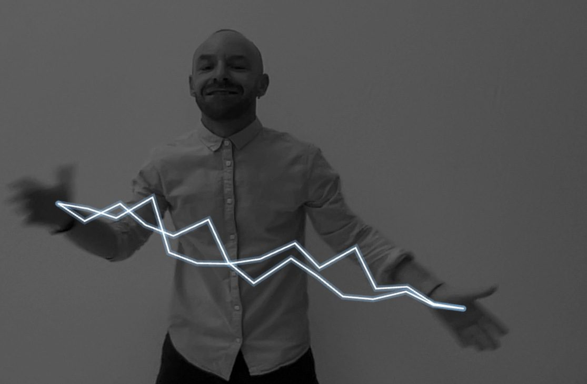
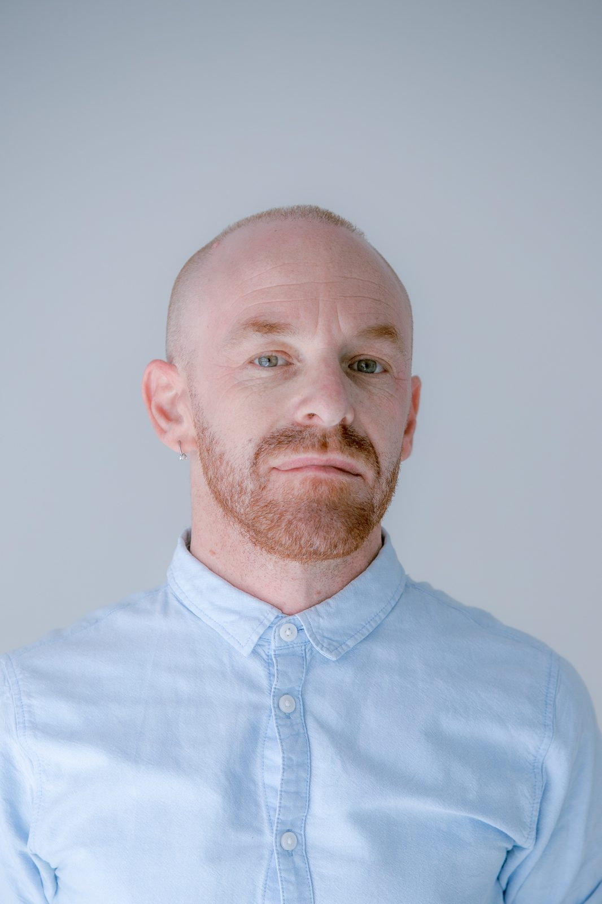

Instrumento-instalación interactiva · 2026 · Barcelona
RepiqueCode
Las manos en el aire dibujan, bailan y tocan. Sin sensores ni mandos: solo una cámara y el dispositivo. Una obra que dialoga con el candombe uruguayo.

01 — La obra
Repique Code es un instrumento-instalación que funciona en el navegador y se toca con el cuerpo. Una cámara lee en tiempo real las manos y los brazos del visitante, y tres modos convierten esos gestos en imagen y sonido.
Dibujo. Con un gesto se dibuja en el aire, y los trazos aparecen en la pantalla sacudidos por el ritmo del candombe.
Baile. Con los brazos se baila: trece gestos de movimiento se convierten en sonido e imagen.
Música. Con las manos se tocan acordes y notas sobre bases candomberas. La altura de las manos marca el tempo, la apertura da forma al filtro y un looper graba lo que se toca.
No hace falta saber música, dibujar ni bailar. Dos personas pueden dibujar juntas o tocar juntas. Al final, cada visitante puede descargarse la imagen que creó y llevársela.
La obra está inspirada en el candombe uruguayo y dialoga con él; el candombe fue inscrito por la UNESCO en 2009 como Patrimonio Cultural Inmaterial de la Humanidad. Incluye una grabación real de tambores de candombe de un conjunto de datos abierto.
Probala ahora en tu navegador ↗Video de la obra
Ficha técnica
| Medio | Instrumento-instalación interactiva para navegador web; arte sonoro |
| Año | 2026 |
| Dimensiones | Variables. Pantalla o proyección, altavoces o auriculares, espacio libre para moverse |
| Materiales | Ordenador, webcam, pantalla o proyector, audio y un foco pequeño sobre las manos. Sin hardware propietario |
| Herramientas y software | Seguimiento de manos y cuerpo con MediaPipe; síntesis y secuenciación con Tone.js sobre Web Audio API; hecha con Vite |
| Audio | Grabaciones de tambores de candombe: dataset de Jure y Rocamora, licencia CC-BY |
| Privacidad | La imagen de la cámara nunca sale del dispositivo. Lo único que sale, si el visitante lo decide, es la imagen que creó |
| Código | Abierto: github.com/damiancolo/repique-code |
| Estreno | Seleccionada para Recorreguts Sonors 2026 — Centre Cívic Convent de Sant Agustí, Barcelona, 18 de noviembre de 2026 |
02 — La historia
Cómo nació
Una noche, lejos de la ciudad, miré hacia arriba y vi que el cielo había cambiado: luces nuevas que lo cruzaban, satélites, muchos. Pensé que se parecían a las personas que pasan por la vida de otras. Aparecen, trazan una línea, tocan otros puntos y siguen de largo. Quise tener algo de control sobre ese cambio, señalar el cielo y lanzarlos yo. Esa idea se convirtió en Vínculos.
Para construirla tuve que aprender seguimiento de manos con cámara, sonido y física dentro del navegador. Cada tecnología que encontraba abría una puerta nueva. Las manos que aprendían a lanzar satélites eran las mismas que conocían el candombe, la tradición de tambores de mi país.
Repique Code es lo que dejó esa búsqueda: un repositorio de posibilidades que se convirtió en una obra en sí misma.
Algunas decisiones le dieron forma. Elegí la cámara como único sensor, para que cualquiera con un portátil pueda tocarla. La imagen nunca sale del dispositivo. El dibujo va primero, para que entre también quien no toca música. Y el código es abierto: la obra sigue cambiando con las ideas de quienes la prueban.
Pasé quince años como abogado defendiendo espacios comunes. Llegué al arte a través de la inteligencia artificial. Creo que la mejor manera de atravesar esta ola tecnológica es tomar esa misma tecnología y darle dirección, como quise hacer con aquellos satélites.
Proceso y documentación



03 — Obras relacionadas

Vínculos
El cielo cambió a simple vista: hoy lo cruzan satélites. Vínculos le devuelve al visitante un poco de control sobre ese cambio. Se apunta al cielo con el índice y, con un golpe seco, se lanza un satélite que va conectando estrellas, cada una con su voz de sintetizador.
Probar Vínculos ↗
Noctilucas · 夜光找
Prototipo para las islas de Matsu, Taiwán. En la oscuridad, el dedo del visitante busca el contorno real de las islas, y la luz se comporta como el plancton bioluminiscente (las «lágrimas azules»).
Probar el prototipo ↗04 — El artista

Damián Lafferranderie Peña (Maldonado, Uruguay, 1983) es un artista y creador uruguayo radicado en Barcelona desde 2023. Trabaja en el cruce entre cuerpo, tecnología y patrimonio cultural. Sus obras interactivas funcionan en el navegador y usan la cámara como único sensor: las manos del visitante se vuelven el instrumento.
Antes de su práctica artística ejerció quince años como abogado y docente universitario en Uruguay, defendiendo la costa y los espacios comunes. Es Doctor en Derecho y tiene formación de posgrado en Manejo Costero Integrado. La inteligencia artificial lo llevó al arte.
Dirige Estudioprompt, estudio de inteligencia artificial, y dirige formaciones en IA para las Cámaras de Comercio de España, los centros cívicos de Barcelona y varias universidades.
Entrevistas (en castellano, con subtítulos en inglés)
Dirección, filmación y edición: Silvina Carcano.
Contacto
damianlafferranderie@gmail.com · estudioprompt.com · LinkedIn